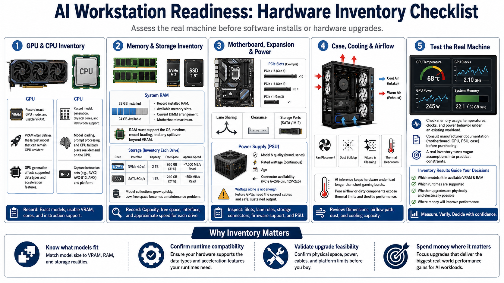

Inventorying the Hardware
Connecting to LMS... Progress: in progress

Narration
Before installing software or ordering upgrades, create an accurate hardware inventory. Record the exact GPU model and its usable VRAM, not just the product family. VRAM often defines the largest model that can remain GPU-resident, while GPU generation influences supported data types and acceleration features. Note the CPU model, generation, physical cores, and instruction support because model loading, prompt processing, and CPU fallback can place significant demand on it.
Record installed system RAM, available memory slots, current module arrangement, and the motherboard maximum. System RAM must support the operating system, runtime, model loading, and any portion of the model that spills beyond VRAM. Inventory each SSD by interface, capacity, free space, and approximate speed. Model collections grow quickly, and insufficient free space can turn routine model updates into a maintenance problem.
Inspect the motherboard for available PCI Express slots, lane sharing, physical clearance, storage connectors, and firmware support. Then verify the power supply model, rated wattage, age, connector availability, and quality. A wattage number by itself is not enough; a future GPU must be supported by the correct cables and safe sustained output. Review case dimensions, fan placement, dust buildup, and airflow from intake to exhaust. AI inference can hold components under load longer than a short gaming burst, revealing thermal limits that casual use never exposed.
Finally, test the real machine. Check memory usage, temperatures, clocks, and power behavior under an existing workload. Consult manufacturer documentation before purchasing. An inventory converts vague assumptions into constraints: which models fit, which runtimes are supported, whether an upgrade is physically and electrically possible, and where money would produce a measurable improvement.